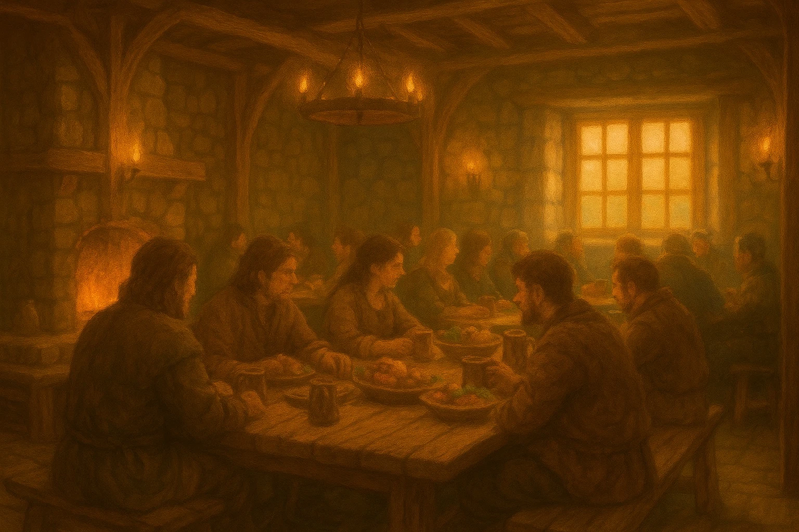
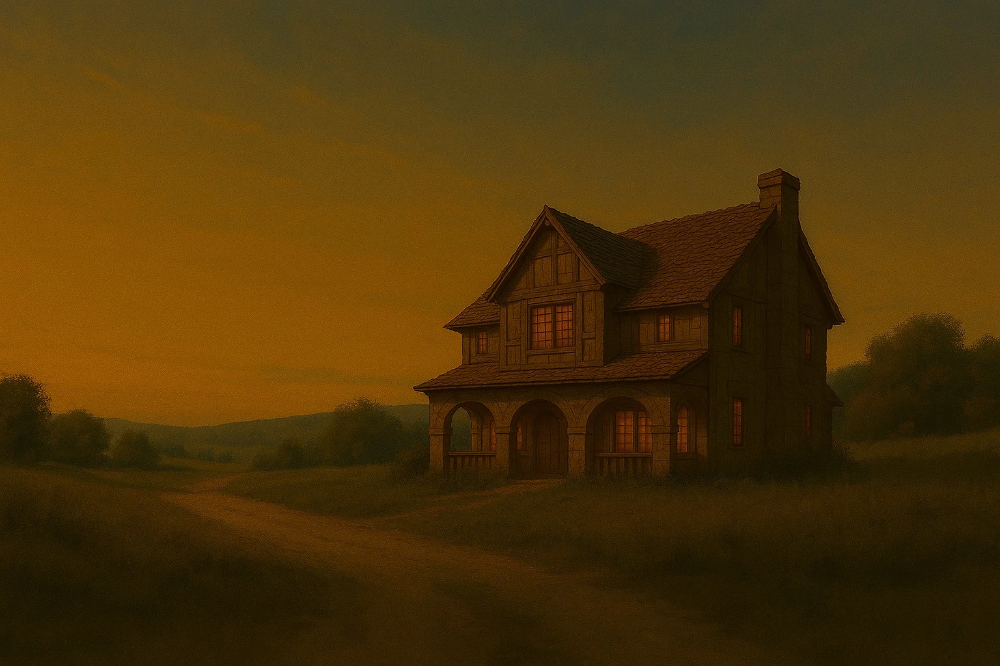
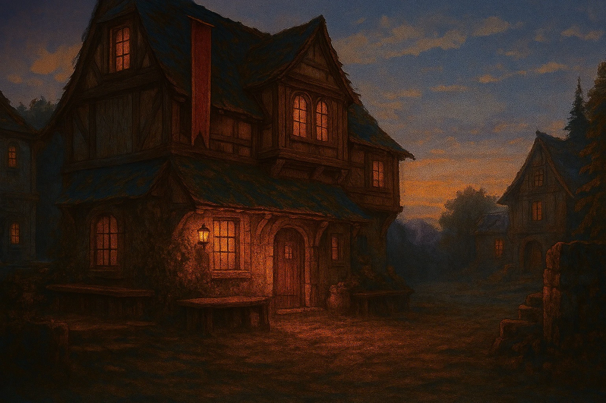
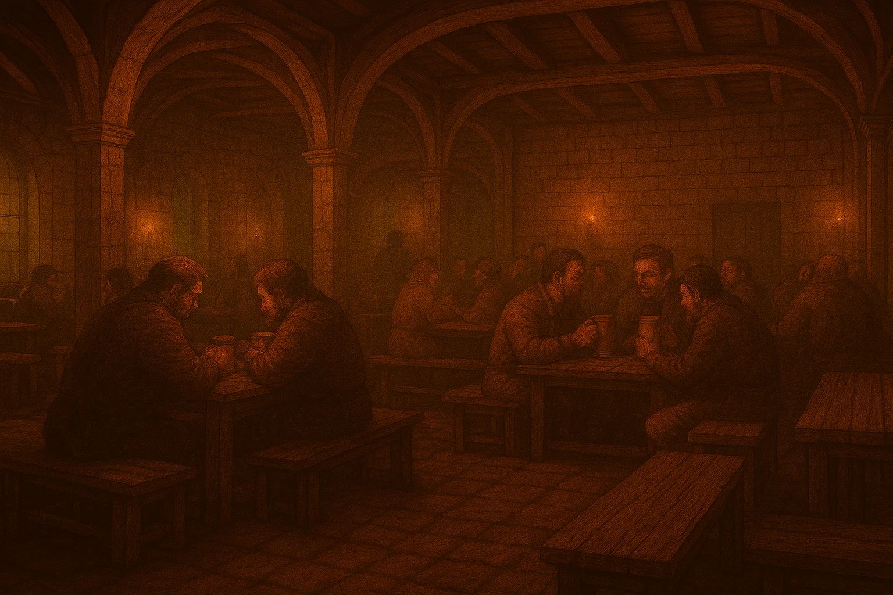
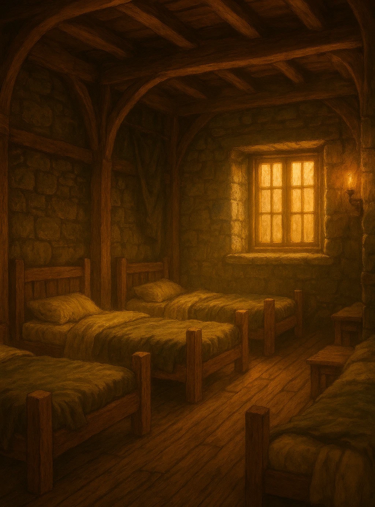
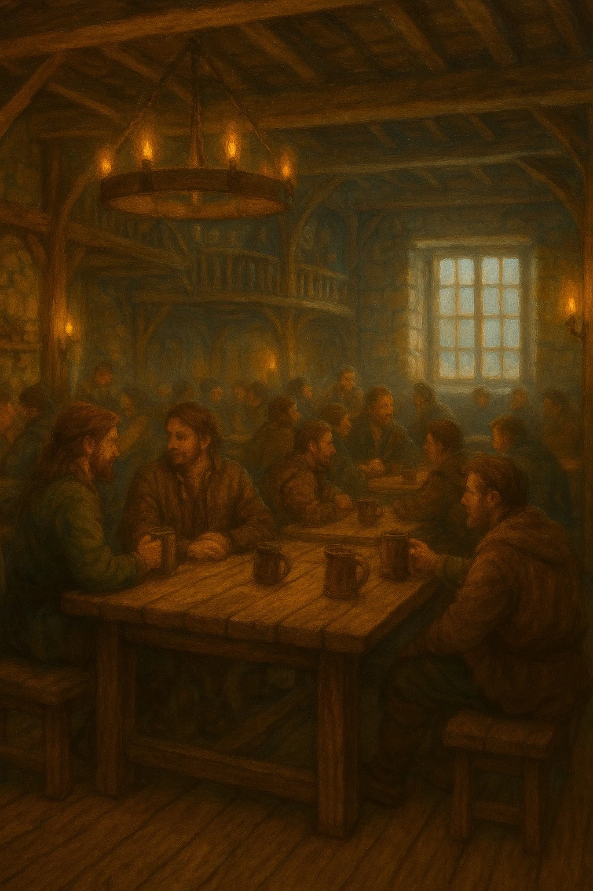
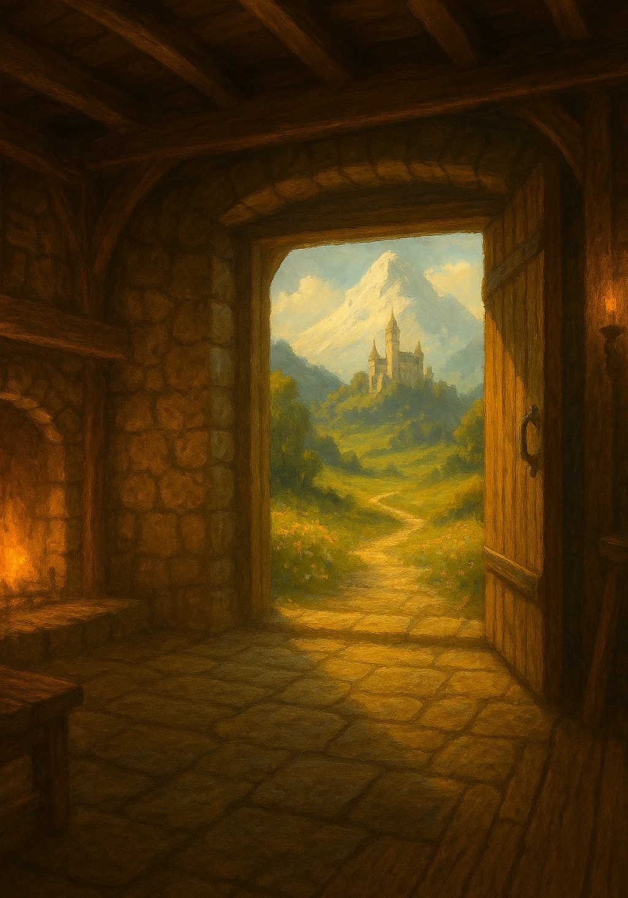
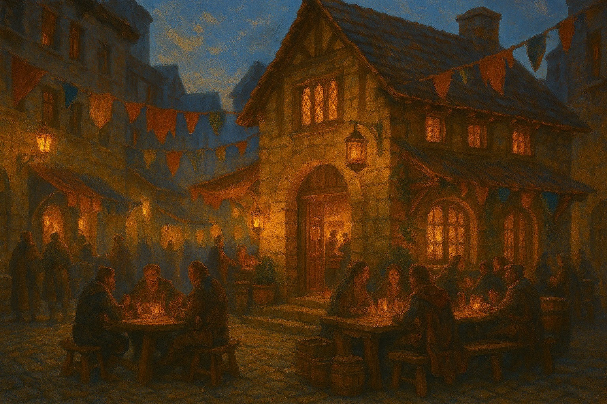

Food & Drink
Hearty meals and well‑kept ales await weary travellers, prepared with care and shaped by the lands surrounding each tavern.




Whether arriving at dusk or setting out at dawn, every Wayfarer’s Rest is shaped by the same guiding purpose: to support those who travel the roads of the Marchlands. From the warmth of the hearth to the reassurance of familiar shelter, each stop along the way is designed to offer comfort, safety, and a moment of calm before the journey continues.

Hearty meals and well‑kept ales await weary travellers, prepared with care and shaped by the lands surrounding each tavern.

From shared bunks to quiet rooms, each Wayfarer’s Rest provides safe and dependable shelter along the journey.

A warm hearth and an open table offer calm and familiarity, wherever the road has led you.

Spanning the Marchlands, our taverns stand ready wherever the road leads, offering refuge between destinations.
These three locations offer a glimpse of the Wayfarer’s Rest as it appears across the Marchlands, shaped by the road and the land it passes through.

A lively gathering place at a key Marchlands crossroads, where merchants, locals, and travellers share food, news, and warmth beneath fluttering market banners.

Built at the water’s edge along the southern coast, the Saltwind Rest welcomes sailors and road‑bound travellers alike, offering shelter from salt wind, spray, and long journeys.

Perched above the western cliffs where land yields to storm and sea, the Last Light stands as the final refuge before the road ends — a place to rest, reflect, or turn back.
A lively gathering place at a key Marchlands crossroads, where merchants, locals, and travellers share food, news, and warmth beneath fluttering market banners.
Built at the water’s edge along the southern coast, the Saltwind Rest welcomes sailors and road‑bound travellers alike, offering shelter from salt wind, spray, and long journeys.
Perched above the western cliffs where land yields to storm and sea, the Last Light stands as the final refuge before the road ends — a place to rest, reflect, or turn back.